Swimming ducks
animation by rotate, and joining frames along an axis two ways
Table of Contents
Ducks are iconic in graphics programming, and moving a picture by
rotating it is about as old as APL. Here a family of ASCII ducks swims
across a pond with nothing but rotate. The waves go the other way,
which needs the ducks' frames and the water's frames joined row by
row. That is written twice, as a workaround and then with the feature
the demo asked for, and the two are checked to agree. The program is
demos/classics/duck.xtl.
The family
A picture is a character matrix. Three rows of twenty characters: a duck and two ducklings. A backslash in a string is written twice.
family ← 3 20 r̲eshape " _ _ _ __(.)< (.)< (.)< \\___) " family ⍝ typed: ⍝ family := 3 20 r_eshape " _ _ _ __(.)< (.)< (.)< \\___) " ⍝ family
_
_ _ __(.)<
(.)< (.)< \___)
The pond is wider. Taking 32 columns along axis 2 pads the rows with blanks.
pond ← 32 t̲ake₂ family pond ⍝ typed: ⍝ pond := 32 t_ake_2 family ⍝ pond
_
_ _ __(.)<
(.)< (.)< \___)
Swimming by rotate
Rotating along axis 2 slides every row at once. A negative amount moves the characters toward the end, so the ducks swim to the right, and what goes off the edge comes back on the left.
-6 o̲-₂ pond -27 o̲-₂ pond ⍝ typed: ⍝ -6 o_-_2 pond ⍝ -27 o_-_2 pond
_
_ _ __(.)<
(.)< (.)< \___)
_
_ __(.)< _
(.)< \___) (.)<
Every frame at once
Rotate with a list of amounts gives one result per amount. With the amounts 0, -1, …, -31 that is the whole swim, a rank-3 array of 32 frames of 3 rows and 32 columns, from one expression and no loop.
frames ← (n̲eg o̲ffsets 32) o̲-₂ pond s̲hape frames ⍝ typed: ⍝ frames := (n_eg o_ffsets 32) o_-_2 pond ⍝ s_hape frames
32 3 32
[]G_RID draws a rank-3 array as frames shown in turn, so the picture
is the animation.
_ ← ⎕S̲HOW ⎕G̲RID frames ⍝ typed: ⍝ _ := []S_HOW []G_RID frames

Waves the other way
The water is one row, and every rotation of it is again one expression: a 32 by 32 matrix with a row per frame, moving left as the ducks move right.
water ← 32 r̲eshape "~ ~~ ~ " waves ← (o̲ffsets 32) o̲- water s̲hape waves ⍝ typed: ⍝ water := 32 r_eshape "~ ~~ ~ " ⍝ waves := (o_ffsets 32) o_- water ⍝ s_hape waves
32 32
Each frame should be the ducks' three rows with that frame's water row below them. Frame by frame, that joins along axis 2 of the frames array, not along axis 1 (which would add more frames).
The workaround: one frame at a time
Without a join along axis 2, each frame is built on its own, ducks over
water by an ordinary c_at, and the frames are stacked by a recursion.
The first frame is given a leading axis of length 1 so the others can
be joined to it.
ᵘf̲rame ← { k → ((n̲eg k) o̲-₂ pond) c̲at k o̲- water } ᵘs̲wim ← { k → f ← ᵘf̲rame k k = 0 ? (1 c̲at s̲hape f) r̲eshape f◆ (ᵘs̲wim k − 1) c̲at f } slow ← ᵘs̲wim 31 s̲hape slow ⍝ typed: ⍝ u:f_rame := { k -> ((n_eg k) o_-_2 pond) c_at k o_- water } ⍝ u:s_wim := { k -> ⍝ f := u:f_rame k ⍝ k = 0 ? (1 c_at s_hape f) r_eshape f; (u:s_wim k - 1) c_at f ⍝ } ⍝ slow := u:s_wim 31 ⍝ s_hape slow
32 4 32
It works, but it gives up the array way: the frames are no longer one rotate, and the recursion is the loop the rotate had removed.
The fix: catenate along axis 2
c_at_k joins along axis k. It moves axis k of both arguments to the
front, joins, and moves it back. The axes other than k must match, and
an argument of one rank less is a single cell, so the 32 by 32 waves
are one row under each of the 32 frames.
swim ← frames c̲at₂ waves s̲hape swim 7 s̲elect swim ⍝ typed: ⍝ swim := frames c_at_2 waves ⍝ s_hape swim ⍝ 7 s_elect swim
32 4 32
_
_ _ __(.)<
(.)< (.)< \___)
~ ~ ~~ ~ ~ ~~ ~ ~ ~ ~~
The two ways agree.
swim m̲atch slow ⍝ typed: ⍝ swim m_atch slow
1
_ ← ⎕S̲HOW ⎕G̲RID swim ⍝ typed: ⍝ _ := []S_HOW []G_RID swim

The two side by side
| Workaround | With c_at_2 |
|---|---|
| a function per frame, a recursion | two rotates and one join |
| frames built one at a time | every frame at once, as arrays |
| works on any version of the language | needs catenate along an axis |
The workaround is still worth knowing: when a picture is too large to hold every frame at once, building one frame at a time is the way to go.